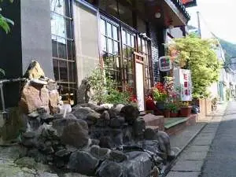
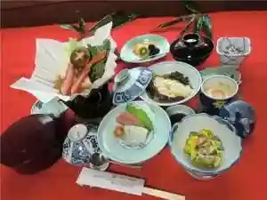
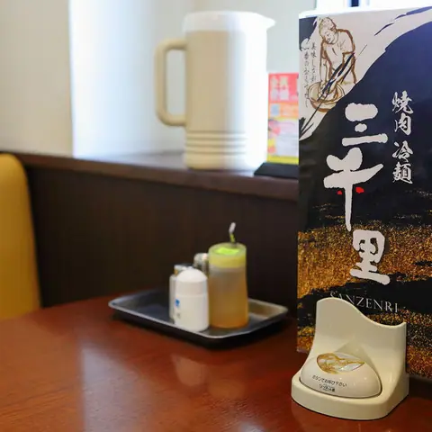
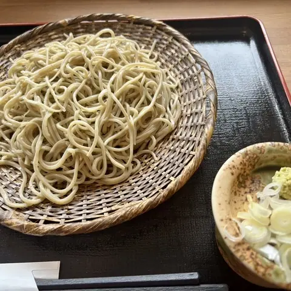
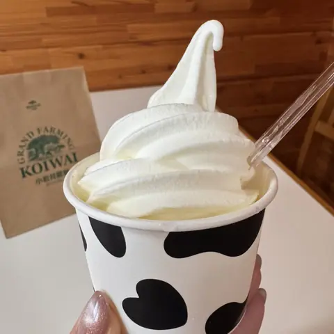
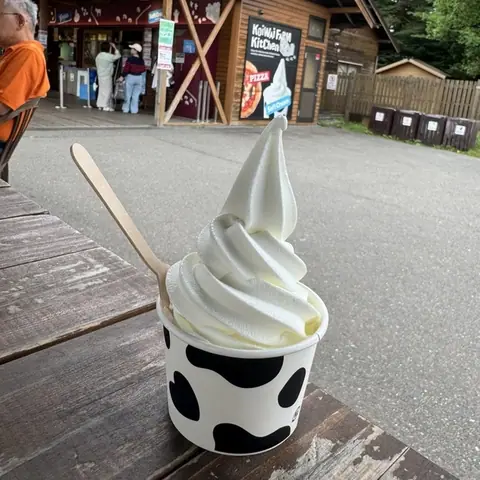
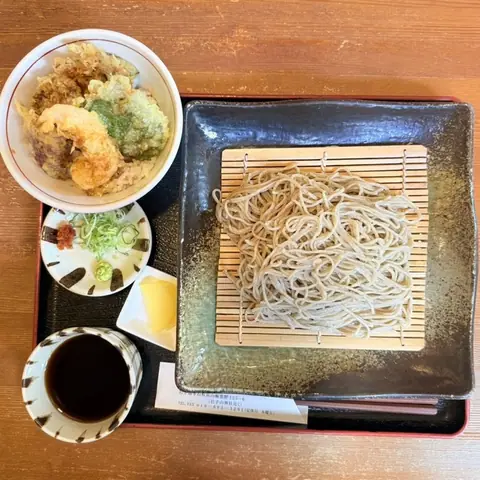
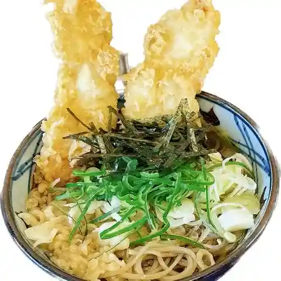
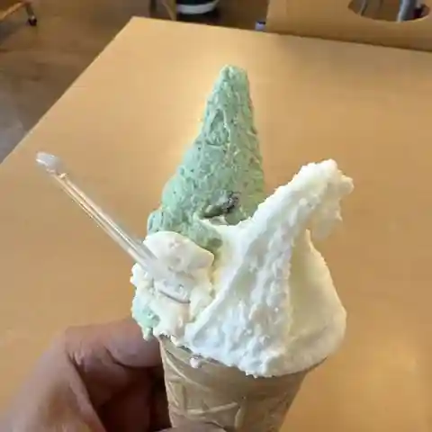
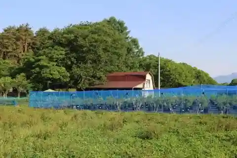

Shizukuishi
Shizukuishi · Iwate
Shizukuishi
Highlighted on the Iwate map.

Stay
雫石プリンスホテル

Shizukuishi Purinsuhoteru
Hotel in Shizukuishi, Iwate.
Ｔａｂｉｓｔ 雫石リゾートホテル
T A B I S T Shizukuishi Rizootohoteru
Hotel in Shizukuishi, Iwate.
温泉民宿 あけぼの荘
Onsen Minshuku Akebono Sou
Guesthouse (minshuku) in Shizukuishi, Iwate.
小枝旅館

Koeda Ryokan
Ryokan inn in Shizukuishi, Iwate.
温泉民宿 栄弥

Onsen Minshuku Sakae Ya
Guesthouse (minshuku) in Shizukuishi, Iwate.
民宿高見荘
Minshuku Takami Sou
Guesthouse (minshuku) in Shizukuishi, Iwate.
Dining
松ぼっくり

Matsu Bokkuri
Gelato and ice-cream shop in Shizukuishi, Iwate.
焼肉・冷麺 三千里 雫石店

Yakiniku Reimen Sanzenri Shizukuishi Mise
Yakiniku (grilled meat) restaurant in Shizukuishi, Iwate.
久保田

Kubota
Soba restaurant in Shizukuishi, Iwate.
小岩井農場まきば園 軽食コーナー

Koiwai Noujou Makiba Sono Keishoku Koonaa
Gelato and ice-cream shop in Shizukuishi, Iwate.
小岩井農場 ミルク館

Koiwai Noujou Miruku Kan
Gelato and ice-cream shop in Shizukuishi, Iwate.
十割そば しんざん

Juu Wari Soba Shinzan
Soba restaurant in Shizukuishi, Iwate.
手打ちそば極楽乃 雫石本店

Teuchi Chisoba Gokuraku No Shizukuishi Honten
Soba restaurant in Shizukuishi, Iwate.
まんま

Manma
Gelato and ice-cream shop in Shizukuishi, Iwate.
麺や おもり
Men Ya Omori
Ramen shop in Shizukuishi, Iwate.
山麓館農場レストラン
Sanroku Kan Noujou Resutoran
Yoshoku (Western-style) restaurant in Shizukuishi, Iwate.
小岩井ファームキッチン
Koiwai Faamukitchin
Soft-serve stand in Shizukuishi, Iwate.
麺屋 隹
Men Ya Sui
Ramen shop in Shizukuishi, Iwate.
玄武洞茶屋
Genbu Hora Chaya
Soba restaurant in Shizukuishi, Iwate.
小岩井農場 ジェラートショップ
Koiwai Noujou Jieraatoshoppu
Gelato and ice-cream shop in Shizukuishi, Iwate.
千秋堂
Senshuu Dou
Japanese sweets shop in Shizukuishi, Iwate.
あねっこ茶屋
Anekko Chaya
Japanese restaurant in Shizukuishi, Iwate.
ソウルキッチン
Sourukitchin
Pizzeria in Shizukuishi, Iwate.
道の駅 雫石あねっこ
Michi No Eki Shizukuishi Anekko
Roadside-station eatery in Shizukuishi, Iwate.
風光舎
Fuukou Sha
Café in Shizukuishi, Iwate.
しずく庵
Shizuku Iori
Soba restaurant in Shizukuishi, Iwate.
らら
Rara
Local-cuisine restaurant in Shizukuishi, Iwate.
食堂 いしや
Shokudou Ishiya
Shokudo diner in Shizukuishi, Iwate.
Sights
Iwate Kogen Snow Park

You can enjoy the only 2km-long gondola in Morioka Shizukuishi area.
Handmade Ice Cream Bokusha Matsubokkuri

Directly managed by a dairy farmer in the town, this ice cream has a rich flavor and is made with a combination of pasteurized milk, which takes care of the milk's original nutrition and flavor, and Shizukuishi's vegetables and fruit trees.
Blueberry Village Nanatsumori

A tourist farm where you can experience picking blueberries while looking out at Mt.
Amihari Onsen Campsite

Since it is a campsite within a vacation village, it is fully equipped and can be used safely even on days such as heavy rain.
Berry’s Garden
Various varieties of blueberry trees are planted on the vast grounds surrounded by trees, and it's fun to taste them and compare them.
Mochi Studio Murakami
Simple rice cakes and dumplings steamed with Iwate rice. Kirisensho, which contains honey, is a popular product.
Handmade soba Yamashige
This is a handmade soba specialty store located along National Route 46 in Shizukuishi Town.
Handmade soba Seki Shokudo
Seki Shokudo is a handmade soba restaurant located in Shizukuishi Town.
Arine Sanso [Amihari Onsen] (Day-Trip Bathing)
Arine Sanso [Amihari Onsen] (Day trip bathing facility)
Kiku no Tsukasa Sake Brewery
Iwate, and is characterized by the fresh, clean sake produced in a thoroughly temperature-controlled environment.
Sennumagahara
A high-rise wetland with an area of approximately 46 hectares located in a pine forest.
Morioka Reimen Sanzenri Shizukuishi Store
Morioka cold noodles Sansenri Shizukuishi store
Yokokoshi skunk cabbage colony
A colony of skunk cabbage in a wetland near the foot of Mt. Komagatake.
Flower & Garden Mori no Kaze
One of the largest full-scale gardening parks in Japan, opened on July 26, 2014.
Hana Kobo Rara Club
One of the largest flower direct sales shops in Tohoku. We carry a wide variety of homegrown flowers, rare seedlings, planters, baskets, and more.
Soba Restaurant Shizukuan
"Shizukuan" is a soba restaurant located on the premises of the roadside station "Shizukuishi Anekko".
Nanbu Yoshare
Its home is the Shizukuishi region near Morioka, and it is also called "Shizukuishi Yoshire." The song was born with an interesting romantic feel against the backdrop of the turbulent Sengoku era, and has been passed down from village to village as a…
Soba and Seasonal Cuisine Goshono
A long-established handmade soba restaurant located along National Route 46 in Shizukuishi Town.
Canola Fields in Shizukuishi
Shizukuishi Town has been planting rape blossoms as part of the "Nano-Technology Project" and usually by the middle of May, rape blossom fields spread in several locations in the town (the locations change every year).
Shizukuishi River Park
A row of about 150 Yoshino cherry trees planted along the river embankment near JR Shizukuishi Station.